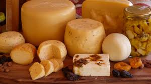
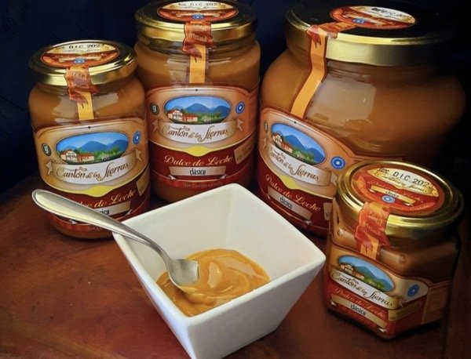
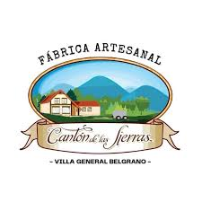

Cantón de las Sierras ofrece una variedad de productos lácteos artesanales, incluyendo yogures naturales y saborizados, quesos frescos y maduros, dulce de leche cremoso y dulces de frutas de estación. Todos elaborados con ingredientes naturales y sin conservantes, reflejando la tradición y calidad de la producción casera.





+
Ellos son los hermanos Hernan y Natalia Fernandez, dueños de "Cantón de las Sierras"